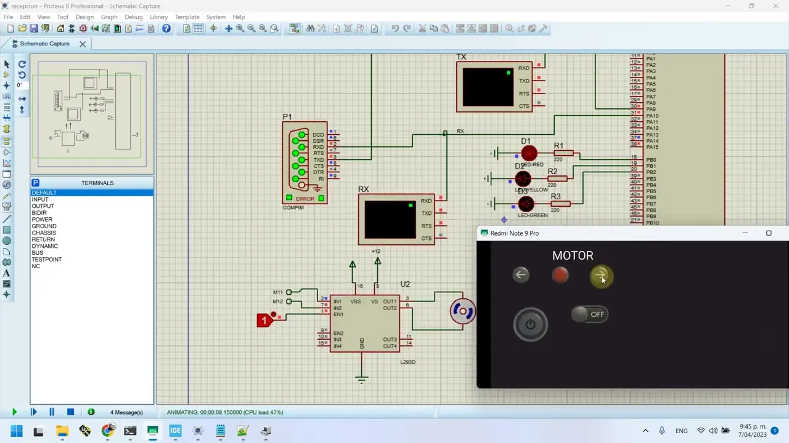
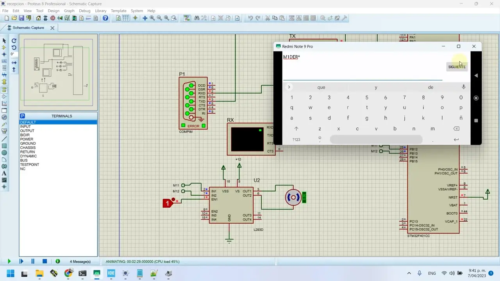
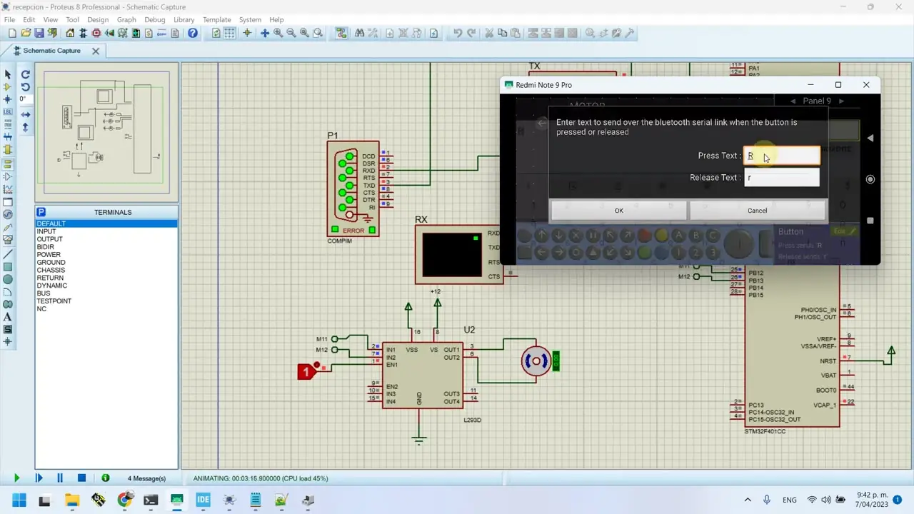
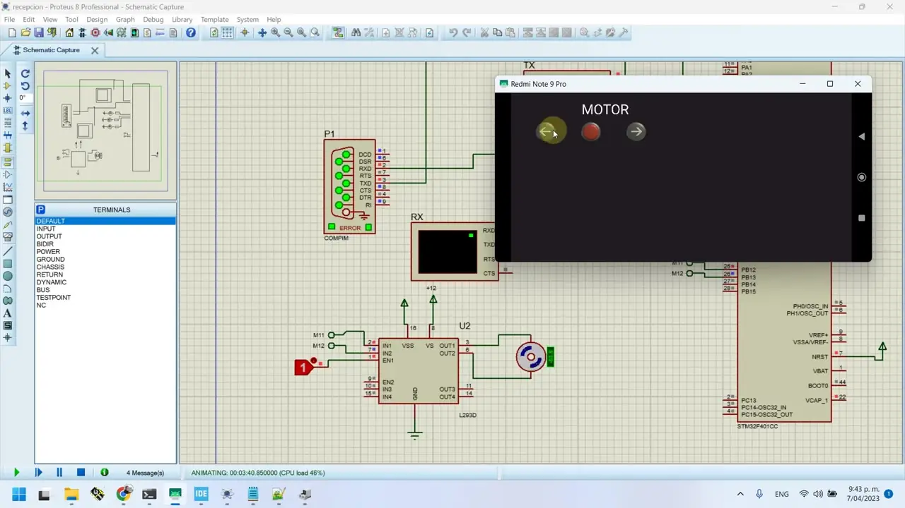
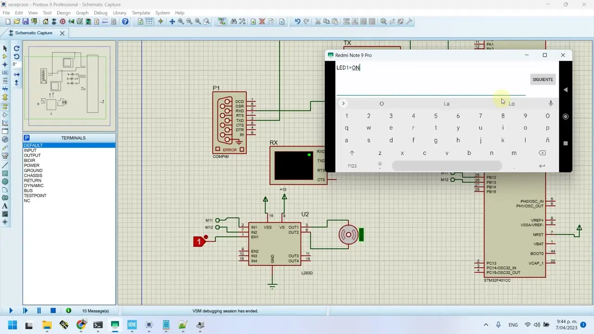
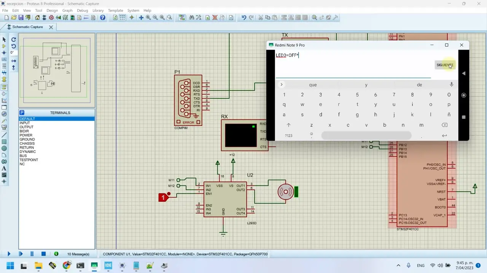

Empareja el módulo HC-05 desde la configuración Bluetooth de Windows (clave típica 1234 o 0000). Windows crea puertos COM nuevos para el enlace.
Mira en el Administrador de dispositivos cuál es el puerto saliente; en el video fue COM17.
En esta tercera parte se reemplaza la terminal serial por el celular. El módulo Bluetooth HC-05 se empareja con el PC, que le asigna un puerto COM. En Proteus, el COMPIM se pone en ese puerto. En el celular, la app Bluetooth Electronics se conecta al módulo y en su editor de paneles se crean botones e interruptores que envían las mismas órdenes con terminador '*'. El programa del STM32 no cambia: sigue siendo la recepción bloqueante de la clase 40.

Empareja el módulo HC-05 desde la configuración Bluetooth de Windows (clave típica 1234 o 0000). Windows crea puertos COM nuevos para el enlace.
Mira en el Administrador de dispositivos cuál es el puerto saliente; en el video fue COM17.
En la simulación, configura el COMPIM con el puerto del Bluetooth (COM17) y la misma velocidad que la UART del STM32 (9600 baudios para el HC-05 por defecto).
Si usas la placa real, conecta TX del HC-05 a RX del STM32 y RX del HC-05 a TX del STM32, con GND común.
Abre Bluetooth Electronics, conéctate al HC-05 y entra al modo edición de un panel. Desde la barra lateral arrastras botones, interruptores y textos.
Cada botón tiene un texto que se envía al presionar y otro al soltar. Pon la orden al presionar y deja vacío el texto al soltar.
M1IZQ*M1DER*M1STOP*No olvides el '*' al final: es el terminador que el programa usa para saber que la orden terminó.



Para cada LED agrega un interruptor: envía una orden al encender y otra al apagar.
LED1=ON* / LED1=OFF*LED2=ON* / LED2=OFF*LED3=ON* / LED3=OFF*

Sal del modo edición y pulsa los botones: el motor gira a la izquierda, a la derecha o se detiene, y los LEDs se encienden y apagan en la simulación.
El programa del STM32 es exactamente el de la clase 40: recibe carácter por carácter hasta el '*', separa la orden con strtok y la compara con strcmp.
/* Igual que la clase 40 */
if (strcmp(orden, "M1IZQ") == 0) { /* motor a la izquierda */ }
else if (strcmp(orden, "M1DER") == 0) { /* motor a la derecha */ }
else if (strcmp(orden, "M1STOP") == 0){ /* parar motor */ }La recepción sigue siendo bloqueante. En las próximas clases se pasa a interrupciones para recibir y transmitir a la vez (full duplex). El enlace a la APK está en la descripción del video.